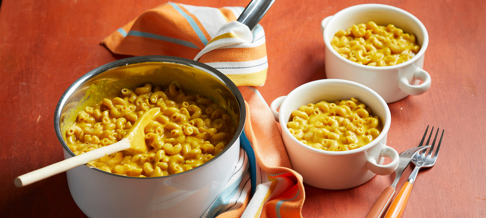

Super Stove-Top Mac and Cheese
Ingredients:
Directions:
1. Combine the potato, carrots, onion, turmeric, garlic, and 2 cups water in a medium saucepan. Bring to a boil over high heat. Reduce heat to low and simmer, covered, for 20 minutes.
2. Place the cashews in a small bowl and add enough water to cover them. Soak for at least 10 minutes; drain.
3. Meanwhile, cook the pasta in a large saucepan according to package directions; drain. Rinse with cool water; drain again. Return to the saucepan.
4. Transfer the potato mixture to a blender. Add the cashews, nutritional yeast, salt, and ½ cup water. Blend for 2 minutes or until smooth and creamy.
5. Top the pasta with the desired amount of sauce, and toss to coat. Season with pepper.